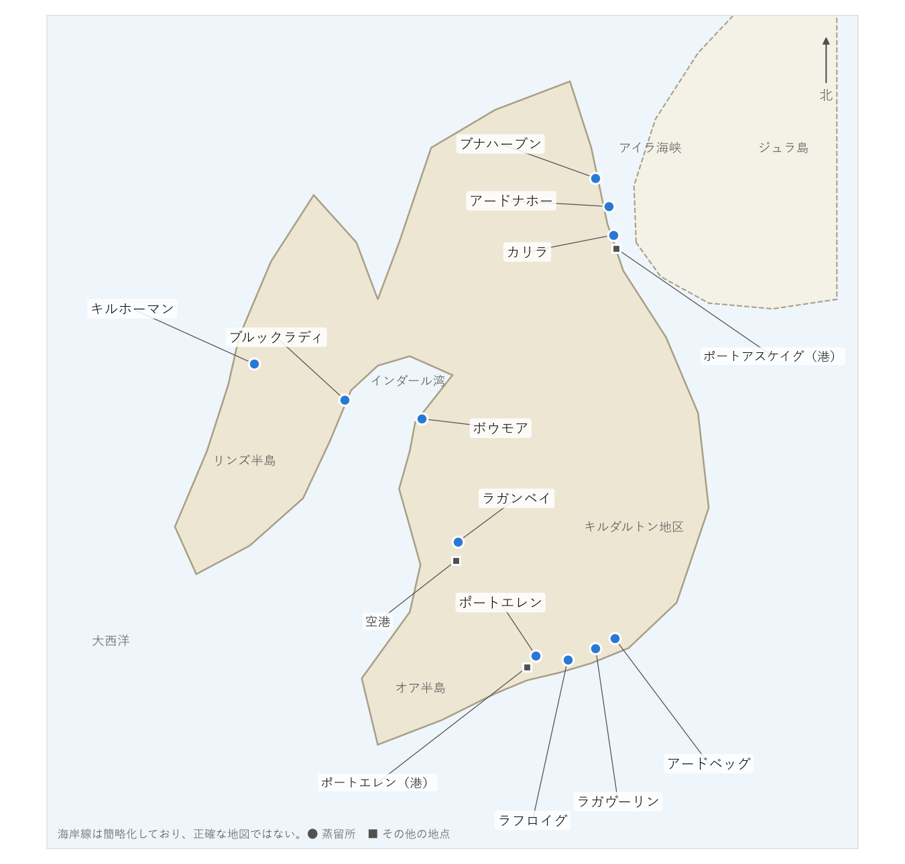

第 3 章 アイラ島という産地
ウイスキーの香味は、原料や製法だけでなく、それを生み出す土地とも結び付いている。本章では、アイラ島の地理・気候と、ウイスキー造りに関わる自然の資源（ピート・水・大麦・海）を説明する。
島の地理
アイラ島は、スコットランド西岸沖に連なるヘブリディーズ諸島のうち、内側の島々（インナー・ヘブリディーズ）の最も南にある島である。面積は約 620 km²、人口は約 3,000 人である。島の美しさから「ヘブリディーズの女王」と呼ばれることもある。
島は南北に約 40 km、東西に約 30 km の大きさで、南西から深く入り込んだインダール湾によって、西側のリンズ半島と東側の本体とに分かれたような形をしている。東側はアイラ海峡を挟んでジュラ島と向かい合い、南には海を隔ててアイルランド島の北部がある。
島の行政と商業の中心はボウモア村で、本土からのフェリーが着く港はポートエレンとポートアスケイグである。蒸留所の位置を図 4に示す。


図 4 アイラ島の簡略地図と蒸留所の位置
島内の地域と蒸留所
アイラ島の蒸留所は、ほとんどが海岸沿いにある。原料や燃料、製品を船で運んでいた時代の名残である。位置によって、次の 4 つの地域に分けて紹介されることが多い（表 5）。
地域 |
蒸留所 |
傾向 |
|---|---|---|
南岸（キルダルトン地区とポートエレン周辺） |
アードベッグ、ラガヴーリン、ラフロイグ、ポートエレン |
ピートを強く効かせた、力強くスモーキーなものが集まる。アイラらしさを代表する地域である。 |
中央部（インダール湾・ラガン湾沿い） |
ボウモア、ラガンベイ |
ボウモアは、スモーキーさと果実のような香りのバランスがとれている。 |
西部（リンズ半島） |
ブルックラディ、キルホーマン |
新しい試みに積極的な蒸留所がある。島で育てた大麦の使用にも熱心である。 |
北東部（アイラ海峡沿い） |
カリラ、アードナホー、ブナハーブン |
ピートを焚かない製品が中心のブナハーブンから、スモーキーなカリラまで幅がある。 |
これはあくまで傾向であり、同じ地域でも蒸留所ごとに個性は大きく違う。各蒸留所の詳細は第 7 章 蒸留所ガイドで説明する。
気候
アイラ島は北緯 55〜56 度にあり、北海道よりずっと北である。しかし、暖かい海流（北大西洋海流）の影響を受けるため、緯度の割に冬は穏やかで、雪が積もることは少ない。夏も涼しく、年間を通じて気温の変化が小さい。
一方で、大西洋からの風が強く、雨が多い。この湿った涼しい気候が、次に述べるピートを育てる。また、気温の変化が小さいことは、樽の中でのウイスキーの熟成をゆっくりと穏やかに進める要因になるとされる。
ピート
ピート（泥炭）は、枯れた植物が十分に分解されないまま、湿地に何千年もかけて積み重なってできたものである。寒くて湿った土地では、微生物による分解が進みにくいため、ピートができやすい。アイラ島は面積の多くがピートの湿地に覆われている。
ピートは乾かすと燃料になる。木の少ないスコットランドの島々では、昔からピートが家庭の燃料として使われてきた。麦芽を乾燥させる燃料としてピートを使ったことが、スモーキーなウイスキーの始まりである。
ピートの成分は、それを作った植物によって違う。アイラ島のピートは、ミズゴケなどのコケ類や草が主体で、木質や灌木（ヘザー）由来の成分が多い本土のピートとは成分が異なるとされる。また、海に近いため、潮風の影響を受けているとも言われる。こうした違いが、アイラウイスキー特有の香りにつながると考えられている（第 5 章 ピートとスモーキーさ）。
水
ウイスキー造りには、仕込みのための水と、冷却のための水が大量に必要である。アイラ島の蒸留所は、それぞれ近くの川や湖、泉から水を引いている。
アイラ島の水の多くは、ピートの層を通ってくるため、紅茶のような茶色をしている。ミネラルが少ない軟水である。この水がウイスキーの香味にどこまで影響するかについては諸説あり、麦芽のピートに比べれば影響は小さいとする見方が多い。なお、ブナハーブンのように、ピートの影響を避けるために泉から直接水を引いている蒸留所もある。
大麦
アイラ島の蒸留所が使う大麦の多くは、スコットランド本土などで育てられたものである。島の農地だけでは、必要な量をまかなえないためである。
ただし近年は、島で大麦を育てる取り組みも増えている。キルホーマンは、島で育てた大麦を蒸留所で製麦・蒸留・熟成・瓶詰めまで行った製品を出している。ブルックラディも、島の農家と契約して育てた大麦を使った製品を出している。こうした取り組みは、土地の個性を表現しようとするもので、ワインの「テロワール（土地の個性）」の考え方に近い。
海
アイラ島の蒸留所の多くは海辺に建ち、熟成庫も海に面している。アイラウイスキーに「潮の香り」や「塩気」を感じる人は多く、海辺の熟成庫で寝かせるからだと説明されることがある。
ただし、樽の中のウイスキーに海の成分がどの程度入るのかは、はっきり分かっていない。また、アイラの蒸留所が造ったウイスキーの中には、スコットランド本土の熟成庫で熟成されるものも少なくない。「潮の香り」の由来については第 5 章 ピートとスモーキーさで改めて説明する。